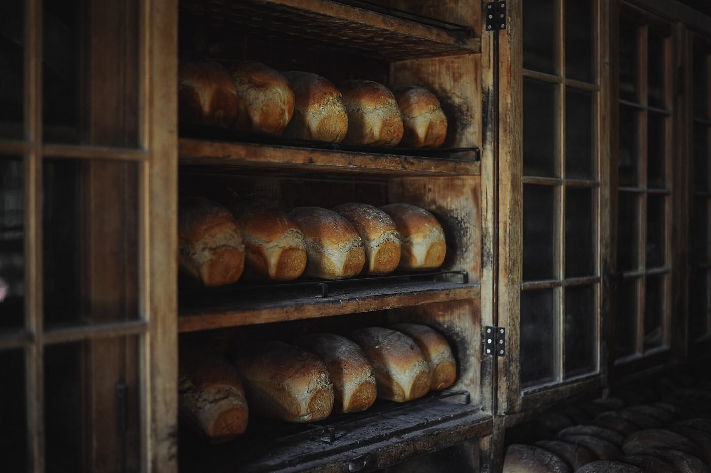

制作側の連想
携帯音楽プレーヤーの部位を、配置図にしてみる
このサイトは、手のひらサイズの携帯音楽プレーヤーを図にしたつもりで作りました。六つの部位に番号をふり、上の図と並べています。制作側の連想で、お店の理念・由来とは無関係です。実際の機器の仕様を示すものでもありません。
凡例
六つの部位
- 1ディスプレイ曲名や再生の進み具合を映す、本体の上側にある小さな画面。
- 2操作ホイール円を指でなぞって、項目を送ったり音量を変えたりする輪の部分。
- 3センターボタン操作ホイールの真ん中にある、決定や再生・停止に使う丸いボタン。
- 4イヤホンジャック本体の上端にある、イヤホンのプラグを差し込む小さな穴。
- 5ホールドスイッチ押し間違いを防ぐために、操作をロックするスライド式のスイッチ。
- 6接続端子本体の下端にある、充電やデータのやり取りに使う差し込み口。
写真イメージ
パンとコーヒー豆の写真


写真はパンとコーヒー豆のイメージです。お店のものではなく、お店で提供している商品を示すものでもありません。

ご案内
お店のこと(確認できたものだけ)
| 所在地 | 〒906-0013 沖縄県宮古島市平良下里510-6 |
|---|---|
| 電話 | 準備中 |
| 営業時間 | 準備中 |
| 定休日 | 準備中 |
| ご予約 | 準備中 |
| 駐車場 | 準備中 |
| SNS | Instagram @sushemaro |